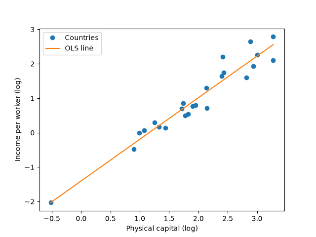

第 3 章: 回帰分析¶
3.1 この章の地図¶
この章では、回帰分析（最小二乗法）を、行列で書いて、関数にします。係数・標準誤差・決定係数を、自分で求めて、statsmodels の結果と照合します。そして、第 1 章の発展会計を、回帰で言い換えて、結果が、なぜ生産関数の係数とずれるのかを調べます。
| 項目 | 内容 |
|---|---|
| 経済学の題材 | 回帰による発展会計: ln y = c + a·ln k + b·ln h + 誤差 |
| 使う Python の機能 | 行列の積（@）、np.linalg.solve・inv・matrix_rank、dataclass（frozen）、pytest.approx |
| 新しく導入するライブラリ | statsmodels（回帰の結果を照合する） |
| 完成形 | fit_ols、OlsResult、development_accounting_regression |
| ファイル | 実装: lib/chapter03/regression.py、lib/chapter03/plot.py（回帰の図）／テスト: test/chapter03/test_regression.py、test/chapter03/test_plot.py（自分で書くときは、practice/chapter03/ に、同じ名前で作ります） |
| データ | 第 1 章の data/countries.csv（架空の 24 か国） |
経済学の式とコードの対応¶
| 統計学 | 式 | コード |
|---|---|---|
| 回帰モデル | y = X·β + 誤差 | fit_ols(y, x) |
| 係数（正規方程式） | β̂ = (X'X)⁻¹ X'y | OlsResult.coefficients |
| 標準誤差 | √(σ̂²·(X'X)⁻¹ の対角)、σ̂² = 残差の二乗和 ÷ (n − k) | OlsResult.standard_errors |
| 決定係数 | R² = 1 − 残差の二乗和 ÷ y の変動の二乗和 | OlsResult.r_squared |
| t 値 | 係数 ÷ 標準誤差 | OlsResult.t_values() |
| 発展会計の回帰 | ln y = c + a·ln k + b·ln h + 誤差 | development_accounting_regression(df) |
記号について: この章の y は、回帰の「被説明変数」（対数の所得）で、X は説明変数の行列、β は係数、n は観測数、k は係数の数（定数項を含む）です。a・b は、回帰の係数で、第 1 シリーズの需要曲線の a・b とは別です。一覧は、記号について を参照してください。
前提とする第 1 シリーズの内容¶
| できること | 第 1 シリーズ |
|---|---|
連立方程式を、np.linalg.solve で解く |
第 9 章 |
| 最小二乗法の考え方（単回帰の傾きと切片） | 付録 A |
3.2 予想する¶
3 つの点 (1, 2)、(2, 4)、(3, 5) に、直線 y = c + b·x を当てはめます。
- 傾き b と切片 c は、いくつになりますか（傾きは、共分散 ÷ 分散で求められます）
- この直線は、データの変動のうち、どれくらい（決定係数）を説明しますか。1 に近いですか
答えは、傾きが 1.5、切片が 2/3 です（x の平均は 2、y の平均は 11/3 で、傾きは 3 ÷ 2 = 1.5）。残差の二乗和は 1/6、y の変動の二乗和は 14/3 なので、決定係数は 1 − (1/6) ÷ (14/3) = 27/28 ≈ 0.964 で、1 に近いです。
3.3 回帰分析の考え方¶
最小二乗法を行列で書く¶
説明変数が 1 つでも 2 つ以上でも、同じ式で書けます。定数項の列（すべて 1）と、説明変数の列を、横に並べた行列を X とします。残差の二乗和を最小にする β̂ は、正規方程式の解です。
(X'X)·β̂ = X'y
第 1 シリーズの第 9 章で解いた連立方程式と、同じ形です。係数の行列が X'X、定数の列が X'y です。
標準誤差・決定係数・t 値¶
- 残差 e = y − X·β̂ の二乗和を、自由度 n − k で割ったものが、誤差の分散の推定値 σ̂² です
- 係数の分散は、σ̂²·(X'X)⁻¹ の対角の要素で、その平方根が標準誤差です
- t 値は、係数を標準誤差で割った値です。係数が 0 から、どれくらい離れているかの目安です
- 決定係数 R² は、y の変動のうち、回帰が説明する割合です
statsmodels の役割¶
statsmodels は、回帰分析の標準的なライブラリです。この章では、結果を使うのではなく、自分の関数の答え合わせに使います。2 つが一致すれば、自分の関数が正しい、可能性が高まります。
3.4 プログラミング¶
手計算の例で、係数を求める¶
予想する節の 3 点を、テストにします。
def small_example() -> tuple[pd.Series, pd.DataFrame]:
y = pd.Series([2.0, 4.0, 5.0], name="y")
x = pd.DataFrame({"x": [1.0, 2.0, 3.0]})
return y, x
def test_傾き1_5と切片2_3を求める() -> None:
y, x = small_example()
result = fit_ols(y, x)
assert result.coefficients["x"] == pytest.approx(1.5)
assert result.coefficients["const"] == pytest.approx(2 / 3)
def test_係数の名前は定数項が先で説明変数が続く() -> None:
y, x = small_example()
assert list(fit_ols(y, x).coefficients.index) == ["const", "x"]
標準誤差と決定係数¶
手計算の値と比べます。傾きの標準誤差は √((1/6) ÷ 2) = √(1/12)、切片は √((1/6) × (1/3 + 4/2)) = √(7/18) です。
def test_標準誤差を手計算と比べる() -> None:
# 残差の二乗和 1/6、自由度 1。傾き: √((1/6) ÷ 2)、切片: √((1/6) × (1/3 + 4/2))
y, x = small_example()
result = fit_ols(y, x)
assert result.standard_errors["x"] == pytest.approx(np.sqrt(1 / 12))
assert result.standard_errors["const"] == pytest.approx(np.sqrt(7 / 18))
def test_決定係数は27_28() -> None:
y, x = small_example()
assert fit_ols(y, x).r_squared == pytest.approx(27 / 28)
def test_t値は係数を標準誤差で割った値() -> None:
y, x = small_example()
result = fit_ols(y, x)
assert result.t_values()["x"] == pytest.approx(1.5 / np.sqrt(1 / 12))
def test_観測数と残差の自由度() -> None:
y, x = small_example()
result = fit_ols(y, x)
assert result.n_obs == 3
assert result.df_resid == 1
そのほかの確かめ¶
def test_直線上のデータなら決定係数は1で標準誤差は0() -> None:
x = pd.DataFrame({"x": [0.0, 1.0, 2.0, 3.0]})
y = pd.Series(1 + 2 * x["x"])
result = fit_ols(y, x)
assert result.coefficients.to_numpy() == pytest.approx([1, 2])
assert result.r_squared == pytest.approx(1)
assert result.standard_errors.to_numpy() == pytest.approx([0, 0], abs=1e-9)
def test_説明変数が2つでも既知の係数を復元できる() -> None:
x = pd.DataFrame({"a": [1.0, 2.0, 3.0, 4.0, 5.0], "b": [2.0, 1.0, 4.0, 3.0, 7.0]})
y = 3 + 2 * x["a"] - 1 * x["b"]
result = fit_ols(y, x)
assert result.coefficients.to_numpy() == pytest.approx([3, 2, -1])
回帰が、意味を持たない入力は、エラーにします。観測数が足りないとき、説明変数が完全に共線形（ほかの列の定数倍になっている）とき、y に差がないときです。
def test_長さが違うときは受け付けない() -> None:
y = pd.Series([1.0, 2.0, 3.0])
x = pd.DataFrame({"x": [1.0, 2.0]})
with pytest.raises(ValueError, match="長さ"):
fit_ols(y, x)
def test_観測数が係数の数以下なら受け付けない() -> None:
y = pd.Series([1.0, 2.0])
x = pd.DataFrame({"x": [1.0, 2.0]})
with pytest.raises(ValueError, match="観測"):
fit_ols(y, x)
def test_説明変数が完全に共線形なら受け付けない() -> None:
x = pd.DataFrame({"a": [1.0, 2.0, 3.0, 4.0], "b": [2.0, 4.0, 6.0, 8.0]})
y = pd.Series([1.0, 3.0, 2.0, 5.0])
with pytest.raises(ValueError, match="共線形"):
fit_ols(y, x)
def test_yがすべて同じなら決定係数は求められない() -> None:
x = pd.DataFrame({"x": [1.0, 2.0, 3.0]})
y = pd.Series([2.0, 2.0, 2.0])
with pytest.raises(ValueError, match="差"):
fit_ols(y, x)
fit_ols を実装する¶
@dataclass(frozen=True)
class OlsResult:
"""最小二乗法の結果。"""
coefficients: pd.Series
standard_errors: pd.Series
r_squared: float
n_obs: int
df_resid: int
def t_values(self) -> pd.Series:
"""t 値 = 係数 ÷ 標準誤差。標準誤差が 0 なら、無限大になる。"""
with np.errstate(divide="ignore", invalid="ignore"):
return self.coefficients / self.standard_errors
def fit_ols(y: pd.Series, x: pd.DataFrame) -> OlsResult:
"""y を、定数項と x の各列に回帰する。
係数 = (X'X)⁻¹X'y、標準誤差 = √(σ²·(X'X)⁻¹ の対角)、σ² = 残差の二乗和 ÷ (n − k)、
決定係数 = 1 − 残差の二乗和 ÷ y の変動の二乗和。
"""
if len(y) != len(x):
raise ValueError("y と x の長さが違う")
design = np.column_stack([np.ones(len(x)), x.to_numpy(dtype=float)])
n, k = design.shape
if n <= k:
raise ValueError("観測数は、係数の数より多くなければならない")
if np.linalg.matrix_rank(design) < k:
raise ValueError("説明変数が完全に共線形なので、係数が決まらない")
values = y.to_numpy(dtype=float)
gram = design.T @ design
beta = np.linalg.solve(gram, design.T @ values)
residuals = values - design @ beta
sum_squared_residuals = float(residuals @ residuals)
total_variation = float(((values - values.mean()) ** 2).sum())
if total_variation == 0:
raise ValueError("y に差がないので、決定係数は求められない")
sigma_squared = sum_squared_residuals / (n - k)
errors = np.sqrt(np.diag(sigma_squared * np.linalg.inv(gram)))
names = ["const", *x.columns]
return OlsResult(
coefficients=pd.Series(beta, index=names),
standard_errors=pd.Series(errors, index=names),
r_squared=1 - sum_squared_residuals / total_variation,
n_obs=n,
df_resid=n - k,
)
design が、定数項の列を足した X です。@ は、行列の積です。np.linalg.solve(gram, ...) が、正規方程式を解いています（np.linalg.inv は、標準誤差のために、(X'X)⁻¹ を求めるときだけ使います）。
statsmodels と照合する¶
def test_statsmodelsの結果と一致する() -> None:
df = load_countries()
y = np.log(df["y"])
x = pd.DataFrame({"ln_k": np.log(df["k"]), "ln_h": np.log(df["h"])})
ours = fit_ols(y, x)
theirs = sm.OLS(y, sm.add_constant(x)).fit()
assert ours.coefficients.to_numpy() == pytest.approx(theirs.params.to_numpy())
assert ours.standard_errors.to_numpy() == pytest.approx(theirs.bse.to_numpy())
assert ours.r_squared == pytest.approx(theirs.rsquared)
assert ours.t_values().to_numpy() == pytest.approx(theirs.tvalues.to_numpy())
係数・標準誤差・決定係数・t 値が、24 か国のデータで、statsmodels と一致します。
発展会計を回帰で言い換える¶
第 1 章の生産関数の対数 ln y = ln A + α·ln k + (1−α)·ln h は、ln A を誤差と見れば、ln k と ln h への回帰に見えます。回帰の係数が、α と 1 − α（1/3 と 2/3）になるでしょうか。
def test_発展会計の回帰は対数の所得を対数の資本と人的資本に回帰する() -> None:
df = load_countries()
result = development_accounting_regression(df)
assert list(result.coefficients.index) == ["const", "ln_k", "ln_h"]
expected = fit_ols(
np.log(df["y"]),
pd.DataFrame({"ln_k": np.log(df["k"]), "ln_h": np.log(df["h"])}),
)
assert result.coefficients.to_numpy() == pytest.approx(
expected.coefficients.to_numpy()
)
def test_回帰で求めた資本の係数は真の資本分配率1_3を大きく上回る() -> None:
# 同梱のデータでは、TFP が資本と相関しているので、係数は偏る（欠落変数バイアス）
result = development_accounting_regression(load_countries())
assert result.coefficients["ln_k"] == pytest.approx(0.878, abs=0.001)
assert result.coefficients["ln_k"] > 1 / 3
def development_accounting_regression(df: pd.DataFrame) -> OlsResult:
"""対数の所得を、対数の物的資本・対数の人的資本に回帰する（第 1 章のデータ）。
係数は、資本分配率 α と 1 − α の推定値に見える。ただし、TFP が資本と
相関していると、係数は偏る（欠落変数バイアス）。
"""
y = np.log(df["y"])
x = pd.DataFrame({"ln_k": np.log(df["k"]), "ln_h": np.log(df["h"])})
return fit_ols(y, x)
結果¶
from lib.chapter01.accounting import load_countries
from lib.chapter03.regression import development_accounting_regression
result = development_accounting_regression(load_countries())
result.coefficients, result.standard_errors, result.t_values(), result.r_squared
| 変数 | 係数 | 標準誤差 | t 値 |
|---|---|---|---|
| 定数項（const） | −1.439 | 0.134 | −10.74 |
| 対数の物的資本（ln_k） | 0.878 | 0.144 | 6.11 |
| 対数の人的資本（ln_h） | 1.414 | 0.556 | 2.55 |
決定係数は 0.948、観測数は 24、残差の自由度は 21 です。
係数が、真の値からずれています。 このデータは、y = A·k^(1/3)·h^(2/3) をちょうど満たすように作りました。真の係数は、ln k が 1/3 ≈ 0.333、ln h が 2/3 ≈ 0.667 です。しかし、回帰の推定値は、0.878 と 1.414 で、どちらも大きく上回ります（合計は 2.29 で、1 を超えます）。

図の読み方:
- 横軸が対数の物的資本、縦軸が対数の所得です。点は国です。強い右上がりです
- 人的資本を入れない回帰直線の傾きは 1.21 で、決定係数は 0.932 です。真の資本の係数 1/3 より、ずっと急です
なぜずれるのでしょうか。このデータでは、豊かな国は、資本だけでなく、TFP（A）も高く、人的資本も高い（共通の「発展の度合い」が、そろって高くする設定です）。ln A は、回帰では、誤差に入ります。誤差（ln A）が、説明変数（ln k・ln h）と相関しているので、係数が、ln A の分まで、引き受けてしまいます。これを、欠落変数バイアスと呼びます。
回帰の係数を、生産関数の係数と読むと、間違えます。 発展会計は、α を外から与えて、TFP を残りとして求めました。回帰で α を推定しようとすると、TFP が資本と相関している場合、α は過大になります。実際のデータでは、真の値が分からないので、ずれていることにも気づけません。この章のデータが架空で、真の値が分かっているから、確かめられました。
実行結果¶
cd apps/macro-programming/python
uv run pytest test/chapter03
20 passed
3.5 規則で言うと¶
- 回帰の係数は、正規方程式を解いて求まる。 連立方程式を解く問題と、同じ形
- 関数は、別の方法で答え合わせをする。 手計算の例、直線上のデータ（既知の答え）、statsmodels の結果の 3 つで確かめる
- 回帰の係数を、モデルの係数と読む前に、疑う。 誤差が、説明変数と相関していると、係数は偏る
混同しやすい点を、表にまとめます。
| 混同しやすい点 | 違い |
|---|---|
| 決定係数が高い と 係数が正しい | 決定係数は、当てはまりの良さ。係数が偏っていても、決定係数は高くなる（この章では 0.948） |
| 標準誤差が小さい と 係数が正しい | 標準誤差は、ばらつき（精度）の目安。偏り（バイアス）は、標準誤差では分からない |
| 回帰の係数 と 生産関数の係数 | 回帰の係数は、データの相関から求まる。生産関数の係数は、モデルの仮定（因果）。欠落変数があると、ずれる |
このモデルが成り立たない場面¶
- 誤差が、説明変数と無相関、という仮定が、必要です。 成り立たないと、係数は偏ります（この章の結果）
- 観測数が少ないと、標準誤差が大きくなります。 この章は、24 か国で、人的資本の係数の標準誤差が 0.556 と大きい
- 説明変数どうしの相関が高いと、係数が不安定です。 完全な共線形では、係数が決まりません（この章の関数は、エラーにします）
- 標準誤差の式は、誤差の分散が一定、という仮定で作られています。 成り立たない場合は、別の式が必要です（この記事の範囲外です。py4etrics を参照してください）
3.6 練習問題¶
| 種類 | 問題 |
|---|---|
| 想起 | 本文を閉じて、(1, 2)、(2, 4)、(3, 5) の回帰の傾き（1.5）を確かめる、fit_ols のテストを書いてください |
| 生成 | 解説を見る前に、単回帰の傾きを、共分散 ÷ 分散で求める simple_slope(x, y) を、テストから書いてください。fit_ols の傾きと、一致することを確かめます |
| 多様 | 人的資本を入れない単回帰（ln y を ln k だけに回帰）で、資本の係数と決定係数が、どうなるかを、先に予想してから確かめてください。人的資本を入れたときと、何が違いますか |
| 交互 | 第 1 章の with_tfp で、対数の TFP の列を作り、ln y を、ln k・ln h・ln A の 3 つに回帰してください。係数と決定係数は、どうなると予想しますか |
解答（先に自分で取り組んでから、開いてください）
想起:
def test_傾き1_5() -> None:
y = pd.Series([2.0, 4.0, 5.0])
x = pd.DataFrame({"x": [1.0, 2.0, 3.0]})
assert fit_ols(y, x).coefficients["x"] == pytest.approx(1.5)
生成: 傾き = Cov(x, y) ÷ Var(x) です（どちらも、標本の分散・共分散で、同じ自由度を使います）。
def simple_slope(x, y):
return np.cov(x, y, ddof=1)[0, 1] / np.var(x, ddof=1)
def test_共分散を分散で割った傾きは最小二乗法の傾きと等しい() -> None:
x = pd.Series([1.0, 2.0, 3.0])
y = pd.Series([2.0, 4.0, 5.0])
assert simple_slope(x, y) == pytest.approx(1.5)
assert simple_slope(x, y) == pytest.approx(
fit_ols(y, pd.DataFrame({"x": x})).coefficients["x"]
)
多様: 人的資本を入れないと、人的資本の効果も、資本の係数に入ります（資本と人的資本は、正の相関）。係数は、大きくなると予想できます。
def test_人的資本を入れない単回帰() -> None:
df = load_countries()
x = pd.DataFrame({"ln_k": np.log(df["k"])})
result = fit_ols(np.log(df["y"]), x)
assert result.coefficients["ln_k"] == pytest.approx(1.209, abs=0.001)
assert result.r_squared == pytest.approx(0.932, abs=0.001)
資本の係数は、0.878 から 1.209 に上がり、決定係数は、0.948 から 0.932 に下がります。人的資本を入れても、係数は、真の 1/3 に近づきません（欠落している TFP の影響が、大きいためです）。
交互: ln A を入れると、生産関数の式 ln y = α·ln k + (1−α)·ln h + ln A が、そのまま成り立ちます。係数は（0、1/3、2/3、1）、決定係数は 1 になります。
def test_TFPを入れると生産関数を完全に復元する() -> None:
table = with_tfp(load_countries(), 1 / 3)
x = pd.DataFrame(
{
"ln_k": np.log(table["k"]),
"ln_h": np.log(table["h"]),
"ln_a": np.log(table["tfp"]),
}
)
result = fit_ols(np.log(table["y"]), x)
assert result.coefficients.to_numpy() == pytest.approx(
[0, 1 / 3, 2 / 3, 1], abs=1e-6
)
assert result.r_squared == pytest.approx(1)
TFP は、第 1 章で、「残り」として作った列なので、恒等式として、完全に当てはまります。当てはまりが完全でも、何かが分かったわけではありません（定義から、当たり前に成り立つだけです）。
3.7 振り返り¶
- 予想した傾き 1.5 は、当たりましたか。標準誤差を、手計算で求められましたか
- 回帰の係数が、真の 1/3 より大きくなる理由を、自分の言葉で説明できますか
- 実際のデータで、同じ偏りが起きているかを、どうすれば確かめられるでしょうか
3.8 まとめ¶
- 最小二乗法を、正規方程式で、行列で書き、係数・標準誤差・決定係数・t 値を求める関数を、テストから書いた
- 手計算の例・直線上のデータ・statsmodels との照合の 3 つで、関数を確かめた
- 発展会計を回帰で言い換えると、TFP が資本と相関するために、係数が偏ることを、確かめた
- 次の章では、時間を通じた動きを表す、差分方程式を学びます（ソロー・モデルの準備です）